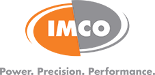

La société regroupe aujourd’hui des ingénieurs, administrateurs, éducateurs et étudiants. Ces derniers proviennent de plus de 350 institutions d’ingénierie à travers le monde. La SAE offre, entre autres, une plateforme d’échange d’idées et d’informations techniques enrichissantes. Ce sont des gens dévoués qui partagent un intérêt commun : l’avancement des technologies du transport pour l’évolution de notre société.
Information
SAE
Équipe
Charles Fischer
Enseignant | coordonnateur Formule SAE
Départements de technique de génie mécanique
Sébastien Bérubé
Enseignant | coordonnateur Formule SAE
Départements de technique de génie mécanique
Partenaires
Financement
Le Service des affaires étudiantes, la Fondation, l’Association générale étudiante du Cégep comptent déjà parmi nos précieux donateurs. Plusieurs entreprises du secteur privé contribuent également. Des pourparlers sont en cours avec certaines compagnies intéressées par notre projet et par la visibilité qu’il offre. Vous aussi vous croyez à notre projet? Voici quelques façons de contribuer :
- Don en argent à La Fondation du cégep du Vieux Montréal spécifiquement pour le projet FSAECVM. Un reçu officiel pour l’impôt sera émis sur demande. Libeller le chèque au nom de La Fondation du cégep du Vieux Montréal et le projet FSAECVM;
- Don de matériaux, de matières premières et de pièce. *
* Ces dons spéciaux pourront aussi être remis à l’équipe FSAECVM par l’entremise de La Fondation du cégep du Vieux Montréal. Le donateur devra faire l’évaluation de la valeur marchande du don de façon à permettre à La Fondation d’émettre sur demande un reçu officiel pour fin d’impôt.
Visibilité
"Ce projet offre une excellente visibilité aux commanditaires qui y contribuent. Les logotypes des collaborateurs et donateurs seront visibles sur toutes les publications ou lors de toutes les expositions où seront présentées les réalisations du FSAECVM. Nous participons à plusieurs évènements et activités de promotion et de recrutement. En voici quelques-uns :
- Compétition internationale Formula SAE® Michigan au Michigan International Speedway au mois de mai 2012 près de Détroit (120 universités, 5 000 visiteurs);
- Portes ouvertes du cégep du Vieux Montréal (10 000 visiteurs);
- Tournées des écoles secondaires (25 écoles, 1500 visiteurs);
- La voiture est exposée en permanence au rez-de-chaussée près de l’entrée principale du Cégep.
Catégories de partenaires
- Collaborateur Titane: 5000$ et plus
- Collaborateur Or: 3000$ à 4999$
- Collaborateur Argent: 1500$ à 2999$
- Collaborateur Bronze:1499$ et moins"
Pour plus d'information, consultez notre Plande commandite 2013-2014(PDF).
Nous joindre
Club étudiant | Formule SAE
Cégep du Vieux Montréal
255, rue Ontario Est, Montréal (Québec) H2X 1X6
514 982-3437, poste 7230